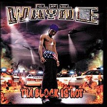
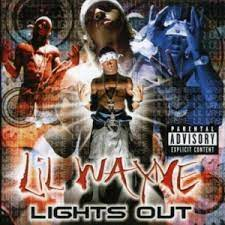
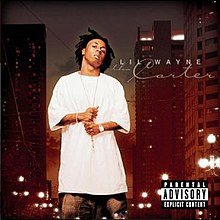
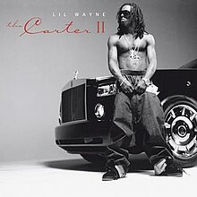

|  | Tha Block Is Hot is the debut major label studio album by American rapper Lil Wayne. It was released on November 2, 1999, by Universal Records and Bryan "Baby" Williams' Cash Money Records.[8] Recording sessions took place at Cash Money Studios in Metairie, Louisiana with the executive production from Bryan "Baby" Williams and Ronald "Slim" Williams, all of these tracks were produced by Mannie Fresh himself. Prior to release, the album was supposed to be titled I Ride At Night.[9] |
|  | Lights Out is the second studio album by American rapper Lil Wayne. It was released on December 19, 2000, by Cash Money Records and Universal Records. |
| 500 Degreez is the third studio album by American rapper Lil Wayne. It was released on July 23, 2002, by Cash Money Records and Universal Records. The album's title was inspired by the album 400 Degreez (1998), by fellow rapper and label-mate Juvenile. | |
|  | Tha Carter is the fourth studio album by American rapper Lil Wayne. It was released on June 29, 2004, by Cash Money Records and Universal Records.[6] The production on the album was mostly handled by Cash Money's former in-house producer Mannie Fresh, before Mannie left the label. A chopped and screwed version of the album was also released by Cash Money Records in 2004. The album spawned four sequels: Tha Carter II, Tha Carter III, Tha Carter IV, and Tha Carter V. The album debuted at number five on the US Billboard 200 chart, selling 116,000 copies in its first week.[7] The album was later certified platinum by the Recording Industry Association of America (RIAA) in September 2020.[8] |
|  | Tha Carter II is the fifth studio album by American rapper Lil Wayne. It was released on December 6, 2005, by Cash Money Records, Young Money Entertainment and Universal Records. Recording sessions took place from 2004 to 2005, with Birdman and his brother Ronald "Slim" Williams serving as the record's executive producers. Additional producers on the album included The Runners and The Heatmakerz, among others. The album serves as a sequel to his fourth album Tha Carter (2004), and was supported by three singles ("Fireman", "Hustler Musik" and "Shooter"). Tha Carter II received critical acclaim and ranks highly in retrospectives of Lil Wayne's best work.[1][2] The album debuted at number two on the US Billboard 200 chart.[3] The album was later certified double platinum by the Recording Industry Association of America (RIAA) in September 2020.[4] |